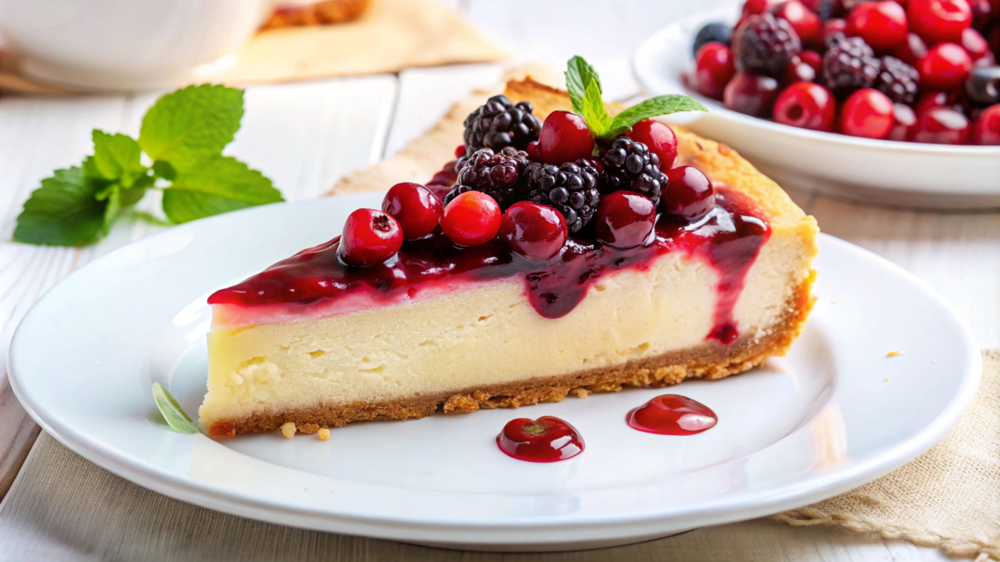

Cheesecake Recipe

Description
In the following minutes, with our recipe, you will know how to make
the
best cheesecake you've ever had.
| Prep Times |
Cook Time |
Additional Time |
Total Time |
Servings |
| 15 mins |
1 hr |
4 hrs |
5 hrs 15 mins |
16 |
Ingredients
- 1 ¾ cups Honey Maid Graham Cracker Crumbs.
- 1 ¼ cups white sugar, divided.
- ⅓ cup butter, melted.
- 3 (8 ounce) packages Philadelphia Cream Cheese, softened.
- 1 cup Breakstone's or Knudsen Sour Cream.
- 2 teaspoons vanilla extract.
- 3 large eggs.
- 1 (21 ounce) can cherry pie filling.
Steps
- Preheat the oven to 350 degrees F (180 degrees C).
- Combine graham crumbs, ¼ cup sugar, and butter in a large bowl.
- Press crumbs into bottom of 9-inch springform pan.
-
Beat cream cheese and remaining 1 cup sugar in large bowl with an
electric mixer until blended; beat in sour cream and vanilla extract.
-
Beat in eggs, one at a time, on low speed, beating until just blended
after each addition.
- Pour mixture over crust.
-
Bake in the preheated oven until the center is almost set, 60 to 70
minutes. Run a knife around the rim of the pan to loosen cake; cool
before removing rim. Refrigerate cheesecake for 4 hours.
- Top with pie filling before serving.
Home